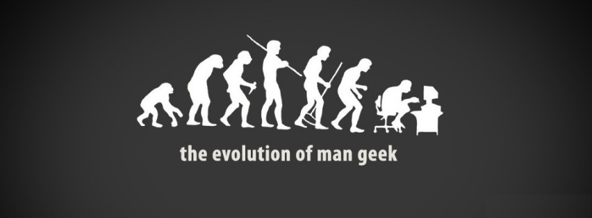
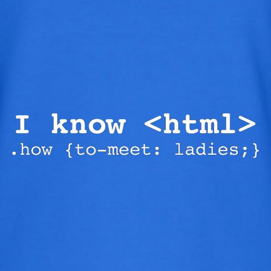

Rad na ovom projektu je bio zanimljiv isto koliko i naporan 😂. Ne naporan u smislu dosadan, vec veoma obiman.
U svakom slučaju rad sa HTML-om je veoma zanimljiv, posebno onima koji imaju nameru da rade sa markerskim i WEB jezicima
naravno i onima koji imaju i deo sebe koji želi da se bavi umetnošću, pored IT-a. Zašto? Pa sa HTML-om i malo CSS-a, vi možete
kreirati pristojnu veb stranicu, još ako poznajete JavuScript, koja je opisana na ovom sajtu vase mogućnosti su neograničene.
Ali, naravno morate poći od početka, gledati hiljade tutorijala, i čitati mnogo knjiga na tu temu da bi ste stekli neko osnovno
znanje. E a onda...
...onda izadje novi HTML neki novi frejmvork za Javu i vi ste opet na početku 😢.

To je tako u IT industriji, uvek nesto novo izađe i iznenadi vas, taman kad ste mislili da ste naučili skoro sve.
Ali to ne treba da obeshrabri nikog, naprotiv, ako vam je zanimljiv rad u HTML-u kao što je meni, sedite lepo i radite, čitajte,
gledajte tutorijale
napravite veb sajt sa sto više elemenata i efekata. Na taj nacin ćete steći znanje i napraviti lepu stvar.
Rad na ovom projektu je bio naporan, ali nadasve ohrabrujući.
Zato sedite i radite i biće supeer!!! 😋 😉 😜
PS:Neke od slika, tekstova i fajlova su preuzimani sa interneta.
PSPS:Ukoliko engleski prevod nije dobar ne zamerite plizz 😊